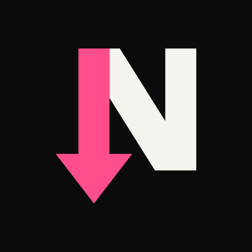
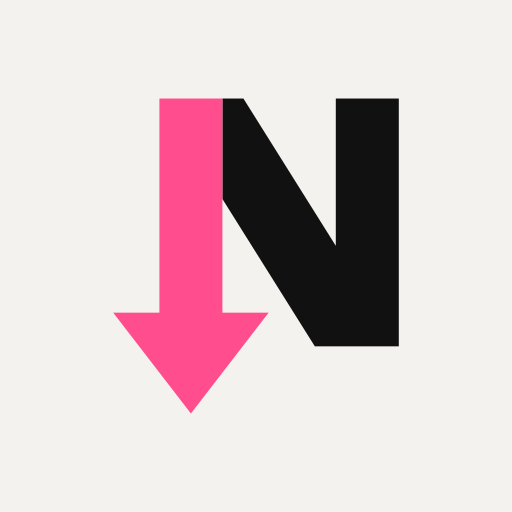
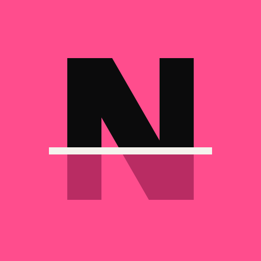
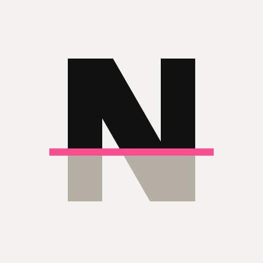
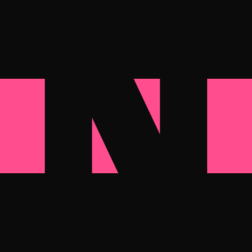
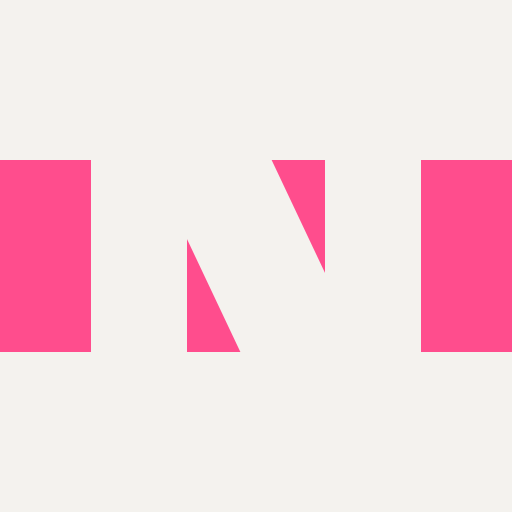

1N lands
The first stroke of the N is the arrow.

The first letter of the name in Latin, as a sign.

The first stroke of the N is the arrow.


The app's own sign: colour comes down behind a line, grey waits below.


A Latin N wearing the dot of ن. One letter for both languages.

A frame with two cuts reads as N, and the upper cut points down.

A wide cinema screen in colour, with the N cut through it.
